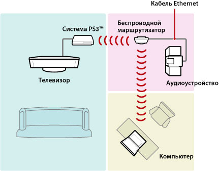
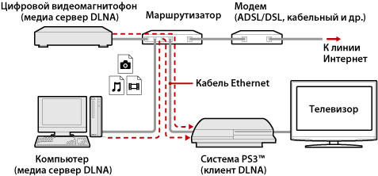
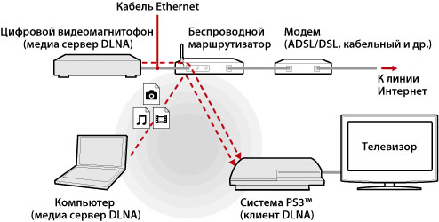
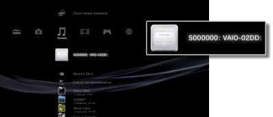
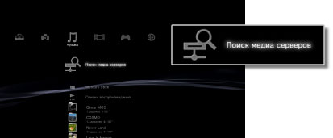

Настройки > Настройки сети > Подключение к медиа серверу
Подключение к медиа серверу
Установка параметров для подключения устройств с поддержкой DLNA.
| Включить | Разрешение подключения устройств с поддержкой DLNA. |
|---|---|
| Выключить | Запрет подключения устройств с поддержкой DLNA. |
О системе DNLA
DLNA (Digital Living Network Alliance) – это стандарт, который предназначен для подключения цифровых устройств (например, компьютеров, цифровых проигрывателей и телевизоров) к сети и совместного использования данных от других подключенных и совместимых с DLNA устройств.
DLNA-совместимые устройства выполняют две различные функции. “Серверы” служат для распространения мультимедийных данных, например, файлов изображений, аудио- и видеофайлов, а "клиенты" - для воспроизведения таких данных, полученных от "серверов". Используя систему PS3™ в качестве клиента, можно просматривать изображения, а также воспроизводить музыкальные и видеофайлы, сохраненные в сетевом устройстве с функциями мультимедийного сервера DLNA.

Соединение системы PS3™ с медиа сервером DNLA
Систему PS3™ можно подключить к серверу DLNA через кабельное или беспроводное соединение.
Пример подключения к компьютеру через проводное подключение

Пример подключения к компьютеру через беспроводное подключение

Настройка медиа сервера DLNA
Установите медиа сервер DLNA таким образом, чтобы он мог использоваться системой PS3™. Функции мультимедийного сервера DLNA могут выполнять перечисленные ниже устройства.
- Устройства, поддерживающие стандарт DLNA, включая продукцию других компаний
- Персональные компьютеры (ПК) с установленным проигрывателем Windows Media® Player 11
Если медиа сервером DLNA служит аудио / видеоустройство
Включите функцию медиа сервера DLNA на подключенном устройстве, содержимое которого требуется предоставить для совместного использования. Способ настройки зависит от подключенного устройства. Подробнее см. в документации, поставляемой с данным устройством.
Если в качестве медиа сервера DLNA используется персональный компьютер Microsoft® Windows®
Персональный компьютер Microsoft® Windows® может быть использован в качестве медиа сервера DLNA благодаря функциям программы Windows Media® Player 11.
1. |
Запустите программу Windows Media® Player 11. |
|---|---|
2. |
Выберите [Общий доступ к файлам мультимедиа] в меню [Библиотека]. |
3. |
Установите флажок [Открыть общий доступ к файлам мультимедиа]. |
4. |
В списке устройств, отмеченных флажком [Открыть общий доступ к файлам мультимедиа], выберите устройства, которым требуется предоставить доступ к данным, затем выберите [Разрешить]. |
5. |
Выберите [ОК]. |
Подсказки
- Проигрыватель Windows Media® Player 11 по умолчанию не устанавливается вместе с операционной системой Microsoft® Windows®. Для установки проигрывателя Windows Media® Player 11 загрузите программу установки с веб-узла Microsoft®.
- Подробные инструкции по работе с проигрывателем Windows Media® Player 11 содержатся в справочной системе проигрывателя Windows Media® Player 11.
- В некоторых случаях на компьютере установлено фирменное программное обеспечение медиа сервера DLNA. Подробнее см. в документации, поставляемой с данным компьютером.
Воспроизведение содержимого медиа сервера DLNA
При включении системы PS3™ выполняется автоматический поиск медиа серверов DLNA в данной сети; значки обнаруженных серверов отображаются в списках  (Фото),
(Фото),  (Музыка) и
(Музыка) и  (Видео).
(Видео).
1. |
Выберите значок медиа сервера DLNA, к которому вы хотите подключиться, в разделе  |
|---|---|
2. |
Выберите файл для воспроизведения. |
Подсказки
- Система PS3™ должна быть подключена к сети. Подробнее о сетевых настройках см. в разделе
 (Настройки) >
(Настройки) >  (Настройки сети) > [Настройки соединения с Интернет] данного руководства.
(Настройки сети) > [Настройки соединения с Интернет] данного руководства. - Если в параметрах сетевой среды режим автоматического назначения IP-адресов заменен режимом назначения IP-адресов по протоколу DHCP, следует повторно выполнить поиск серверов в разделе
 (Поиск медиа серверов).
(Поиск медиа серверов). - Значок мультимедийного сервера DLNA отображается только в том случае, когда включена функция [Подключение к мультимедийному серверу] в меню (Настройки) > (Настройки сети).
- Отображаемые имена папок зависят от медиа сервера DLNA.
- В зависимости от используемого мультимедийного сервера DLNA некоторые файлы могут не воспроизводиться, а также может быть ограничена возможность выполнения операций во время воспроизведения.
- Воспроизведение содержимого, защищенного системой охраны авторских прав, невозможно.
- К именам сохраненных на серверах файлов, которые содержат несовместимые с DLNA данные, может добавляться звездочка. В некоторых случаях воспроизведение этих файлов в системе PS3™ невозможно. Кроме того, даже если воспроизведение файлов возможно в системе PS3™, воспроизведение этих файлов может оказаться невозможным в других устройствах.
Поиск медиа серверов DLNA вручную
Пользователь может запустить повторный поиск мультимедийных серверов DLNA в той же сети. Этой функцией следует пользоваться в том случае, если при включении системы PS3™ не обнаружено ни одного медиа сервера DLNA.
Выберите (Поиск мультимедийных серверов) в меню (Фото), (Музыка) или (Видео). После отображения результатов поиска и возврата к меню XMB™ на экран выводится список медиа серверов DLNA, к которым можно подключиться.

Подсказка
(Поиск медиа серверов) отображается только в том случае, когда включена функция [Подключение к медиа серверу] в разделе (Настройки сети) меню (Настройки).